第 7 讲：蒙皮（Skinning）——从 LBS 到 DQS 与 Blendshapes
讲清楚骨骼动画如何把网格顶点“绑”到骨架上变形，以及 LBS 的糖果纸问题与 DQS、Blendshapes 的解决思路
◆ 学完这一讲，你应该能
能用自己的话解释绑定姿势（Bind Pose）、蒙皮权重（Skinning Weights）和蒙皮变换（Skinning Transformation）三者的关系
能写出线性混合蒙皮（LBS）的完整公式，并说明每一项的几何含义
能解释 LBS 为什么会产生糖果纸伪影（Candy-Wrapper Artifact），以及 DQS 如何用对偶四元数缓解它
能说明 Blendshapes 与 Pose Space Deformation（PSD）的基本思想，并知道它们与 LBS 的分工
能理解 SMPL 模型如何用 PCA 降维 + LBS 表示人体形状与姿态
能在 UE/Unity 中对应找到蒙皮权重、Morph Target/BlendShape、Skeletal Mesh 等概念
核心结论速记
蒙皮 = 把网格顶点按权重绑定到一根或多根骨骼上，骨骼运动时顶点跟着做刚体变换的加权平均。
LBS 公式：顶点新位置 = Σ_j w_ij · (Q'_j · (Q_j^T · (x_i - o_j)) + o'_j)，其中 Q_j、Q'_j 是骨骼在绑定姿势和当前姿势下的旋转，o_j、o'_j 是骨骼原点。
LBS 本质是对旋转矩阵做线性插值，当两个骨骼旋转差异大时，加权平均的旋转矩阵不再正交，导致体积塌陷——这就是糖果纸伪影。
DQS 把刚体变换表示为单位对偶四元数，在对偶四元数空间做线性混合再归一化，相当于在 SE(3) 上做近似球面插值，能保持刚体性、避免糖果纸。
Blendshapes（形变目标）用“平均形状 + Σ 权重 × 偏移形状”表示表情/姿态相关的细节，是 LBS 之外叠加的修正层。
Pose Space Deformation（PSD）把 Blendshapes 的权重看成姿态 θ 的函数，用 RBF 等散点插值从示例姿态中学习修正量。
SMPL 模型 = 用 PCA 从大量人体扫描中提取形状主成分 + 姿态 Blendshapes + LBS 蒙皮，是 ML/CV 里广泛采用的人体参数化模型。
面部动画通常 = 身份（Identity）+ 表情（Expression），用一组 ARKit 风格的 Blendshapes 线性组合驱动。
011. 蒙皮在角色动画管线中的位置
角色动画的典型管线是：建模 → 绑定（Rigging）→ 蒙皮（Skinning）→ 骨骼动画（Skeletal Animation）→ 渲染。
- Rigging：搭建骨骼层级，定义每根骨骼的原点、朝向、父子关系。可以理解为给角色装上一副“骨架”。
- Skinning：把静态网格的每个顶点“绑”到一根或多根骨骼上，并给出权重。骨骼动的时候，顶点按权重跟着动。
- Skeletal Animation：给骨骼关键帧，驱动骨骼运动。
这一讲的重点是 Skinning：它决定了“骨骼动起来之后，皮肤怎么跟着动”。课件里用 Stanford Bunny 和简单的手臂弯曲示意图说明：网格本身只是一堆顶点，蒙皮才是让顶点随骨骼变形的规则。
一个关键概念是 绑定姿势（Bind Pose / Rest Pose）：这是建模时网格与骨骼对齐的那个“默认姿势”。蒙皮变换总是相对于绑定姿势来计算的——也就是说，我们先记住顶点在绑定姿势下相对于骨骼的位置，骨骼运动后再把这个相对位置“带”到新位置。
直觉：蒙皮就像把顶点用橡皮筋绑在骨头上。绑定姿势是橡皮筋没被拉长时的状态；骨骼一动，橡皮筋带着顶点走。
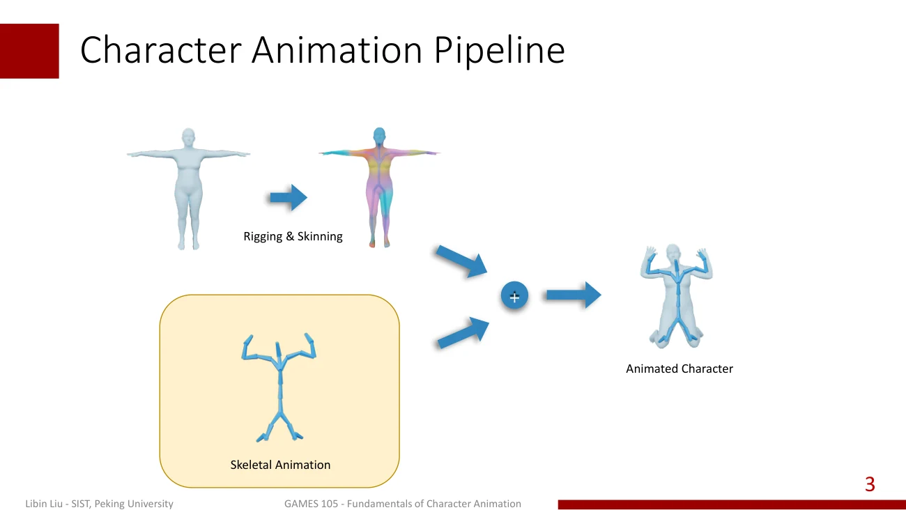
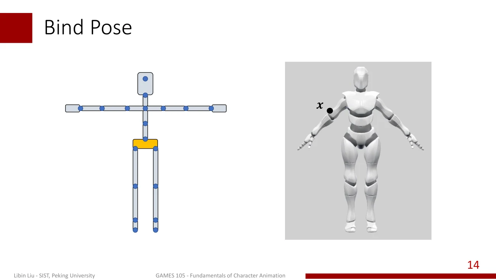
常见坑
绑定姿势没对齐 → 蒙皮后模型整体偏移或扭曲 → 检查建模时网格与骨骼是否在同一坐标系下对齐，绑定前先冻结变换。
把蒙皮当成“骨骼直接带动顶点” → 忽略权重 → 关节处出现硬边或撕裂 → 确保关节附近顶点有平滑过渡的权重。
UE / Unity 落地
UE：Skeletal Mesh 导入时需要指定骨骼（Skeleton），绑定姿势在 DCC 里确定；蒙皮权重在导入时随 FBX 带入。
Unity：Skinned Mesh Renderer 组件负责蒙皮，Bones 数组对应骨骼层级，权重在建模软件里刷好。
022. 从单根骨骼的刚体变换到蒙皮公式
先看最简单的情况：一个顶点只受一根骨骼影响。
设骨骼在绑定姿势下的旋转为 \(Q\)、原点为 \(\boldsymbol{o}\)，当前姿势下旋转为 \(Q'\)、原点为 \(\boldsymbol{o}'\)。顶点在绑定姿势下的位置是 \(\boldsymbol{x}\)。
第一步：把顶点变换到骨骼的局部坐标系： \[ \boldsymbol{r} = Q^T (\boldsymbol{x} - \boldsymbol{o}) \] 这里 \(\boldsymbol{r}\) 是顶点相对于骨骼原点的“局部偏移”。
第二步：骨骼运动后，把局部偏移用新的旋转带回去： \[ \boldsymbol{x}' = Q' \boldsymbol{r} + \boldsymbol{o}' \]
合起来就是： \[ \boldsymbol{x}' = Q' Q^T (\boldsymbol{x} - \boldsymbol{o}) + \boldsymbol{o}' \]
这个式子说明：蒙皮变换 = 把顶点从绑定姿势“卸”到骨骼局部空间，再用当前骨骼变换“装”回世界空间。
当顶点受多根骨骼影响时，我们给每根骨骼一个权重 \(w_{ij}\)（顶点 \(i\) 对骨骼 \(j\) 的权重），然后加权平均： \[ \boldsymbol{x}_i' = \sum_j w_{ij} \left( Q_j' Q_j^T (\boldsymbol{x}_i - \boldsymbol{o}_j) + \boldsymbol{o}_j' \right) \] 且权重满足 \(\sum_j w_{ij} = 1\)、\(w_{ij} \ge 0\)。这就是线性混合蒙皮（Linear Blend Skinning, LBS）。
直觉：每个骨骼都“提议”一个顶点新位置，LBS 按权重把这些提议平均起来。
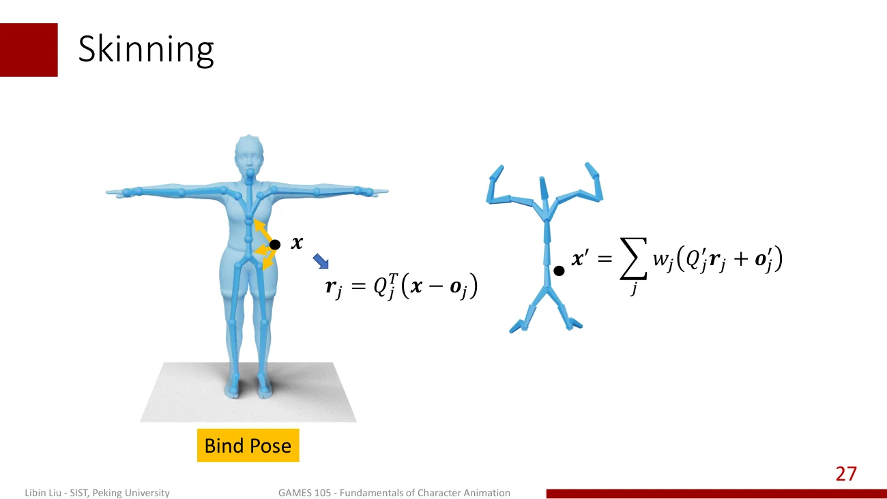
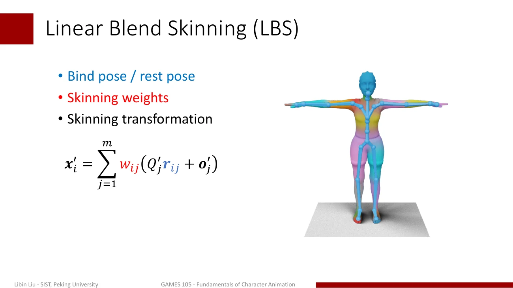
补充说明
课件里把 \(Q_j' Q_j^T\) 整体称为蒙皮变换矩阵，实际引擎里通常预计算成 4x4 矩阵上传到 GPU。
常见坑
权重不归一化 → 顶点被“拉向”权重和的方向，模型膨胀或收缩 → 导出前检查每顶点权重和是否为 1。
骨骼原点 \(\boldsymbol{o}_j\) 取错（比如取了世界原点） → 旋转中心错误，顶点绕错误点转 → 确认骨骼原点在骨骼局部坐标系中的位置。
旋转矩阵 \(Q\) 未正交化 → 累积误差导致变形漂移 → 定期对旋转矩阵做正交化（或直接用四元数存储）。
UE / Unity 落地
UE：每个顶点最多受 4 根骨骼影响（GPU Skinning 常见限制），超出部分会被丢弃或重新归一化。
Unity：Quality Settings 里可设 Blend Weights 为 1/2/4 根骨骼，移动端通常 2 根。
LBS 顶点着色器核心（伪代码）（hlsl）
float4x4 boneMatrices[N]; // 每根骨骼的 Q' * Q^T 与平移组合
float4 weights; // 每顶点 4 个权重
uint4 boneIndices;
float4 SkinnedPosition(float4 pos)
{
float4 result = 0;
for (int i = 0; i < 4; ++i)
result += weights[i] * mul(boneMatrices[boneIndices[i]], pos);
return result;
}033. LBS 的糖果纸伪影：线性混合旋转的代价
LBS 在工业界用得非常广：高效、GPU 友好、游戏引擎都支持。但它有一个著名的缺陷——糖果纸伪影（Candy-Wrapper Artifact）。
把 LBS 公式里的旋转部分单独拿出来看： \[ \boldsymbol{x}' = \sum_j w_{ij} R_j \boldsymbol{x}_i + \sum_j w_{ij} \boldsymbol{t}_j \] 其中 \(R_j\) 是骨骼 \(j\) 从绑定姿势到当前姿势的旋转。问题在于：我们对旋转矩阵做了线性加权平均。
两个旋转矩阵的加权平均 \(w R_1 + (1-w) R_2\) 一般不再是旋转矩阵（不再正交，行列式也可能小于 1）。几何上，这会让顶点被“压扁”到两个旋转之间的弦上，而不是沿着圆弧走。
典型现象：手臂弯曲 180° 时，肘部附近的顶点被拧成一条细线，像糖果纸两端被拧紧——这就是糖果纸伪影。弯曲角度越大、权重过渡区越宽，伪影越明显。
课件还提到其他高级方法（Multi-linear Skinning、Multi-weight Enveloping、Animation Space 等），但重点转向非线性蒙皮：既然问题出在“线性混合旋转”，能不能改用四元数 + 球面插值（SLERP）？这就是下一节 DQS 的动机。
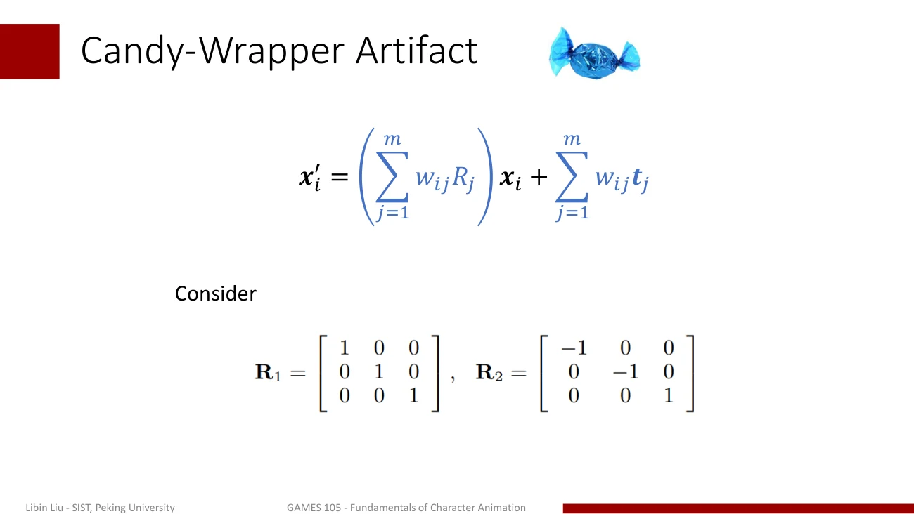
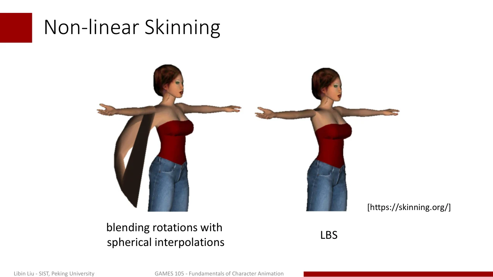
补充说明
课件 P39 列出了 Multi-linear Skinning 等方法但明确说“本讲不覆盖”，重点放在 DQS。
常见坑
把糖果纸伪影误认为权重没刷好 → 反复刷权重仍无法消除 → 这是 LBS 的固有缺陷，大角度弯曲时只能靠 DQS 或校正形状缓解。
权重过渡区过宽 → 伪影范围更大 → 适当收窄关节处权重过渡带，但注意别产生硬边。
UE / Unity 落地
UE：默认使用 LBS；对肘部、膝盖等大弯曲关节，可用 Corrective Shape（校正 Morph Target）在特定角度叠加修正形状。
Unity：同样默认 LBS；可用 Blendshape 或 Dual Quaternion Skinning 插件（Unity 有 DQS 变体）改善。
044. 对偶四元数与 DQS：在 SE(3) 上做插值
要理解 DQS，先要理解对偶四元数（Dual Quaternion）。
对偶数（Dual Number）：形如 \(x = a + b\varepsilon\)，其中 \(\varepsilon^2 = 0\) 但 \(\varepsilon \ne 0\)。它和复数 \(a + bi\)（\(i^2 = -1\)）结构类似，只是“虚部”平方为 0。对偶数乘法：\((a + b\varepsilon)(c + d\varepsilon) = ac + (ad + bc)\varepsilon\)。
对偶四元数：\(\hat{\boldsymbol{q}} = \boldsymbol{q}_r + \varepsilon \boldsymbol{q}_\varepsilon\)，其中 \(\boldsymbol{q}_r\) 和 \(\boldsymbol{q}_\varepsilon\) 都是普通四元数。
关键性质：任意刚体变换 \(T \in SE(3)\) 都可以表示为一个单位对偶四元数。给定旋转 \(R\) 和平移 \(\boldsymbol{t}\)：
- \(\boldsymbol{q}_r\) = \(R\) 对应的四元数
- \(\boldsymbol{q}_\varepsilon = \frac{1}{2} \boldsymbol{t} \boldsymbol{q}_r\)，其中 \(\boldsymbol{t}\) 写成纯四元数 \((0, \boldsymbol{t})\)
单位对偶四元数满足 \(\|\boldsymbol{q}_r\| = 1\) 且 \(\boldsymbol{q}_r \cdot \boldsymbol{q}_\varepsilon = 0\)。
DQS 的做法：把每根骨骼的蒙皮变换转成单位对偶四元数 \(\hat{\boldsymbol{q}}_j\)，然后对它们做线性混合再归一化（Dual-Quaternion Linear Blending, DLB）： \[ \hat{\boldsymbol{q}} = \frac{\sum_j w_j \hat{\boldsymbol{q}}_j}{\|\sum_j w_j \hat{\boldsymbol{q}}_j\|} \] 再用 \(\hat{\boldsymbol{q}}\) 变换顶点：\(\boldsymbol{v}' = \hat{\boldsymbol{q}} \, \hat{\boldsymbol{v}} \, \hat{\boldsymbol{q}}^\star\)。
这相当于在 \(SE(3)\) 上做近似球面插值（intrinsic average），保持了刚体性，因此不会产生糖果纸伪影。代价是 DQS 也有自己的伪影——膨胀伪影（Bulging Artifact）：关节处可能鼓起来。
直觉：LBS 是把两个刚体变换“直线平均”，DQS 是沿着旋转的“弧线”平均，所以形状保持得更好。
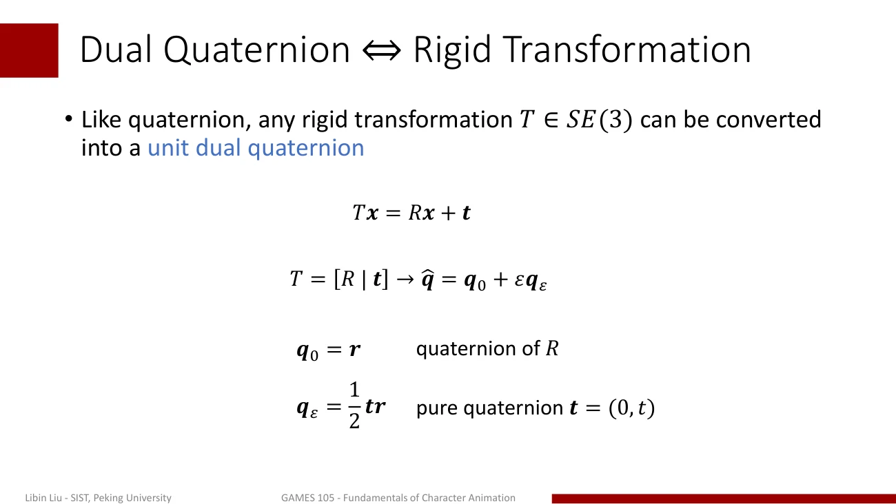
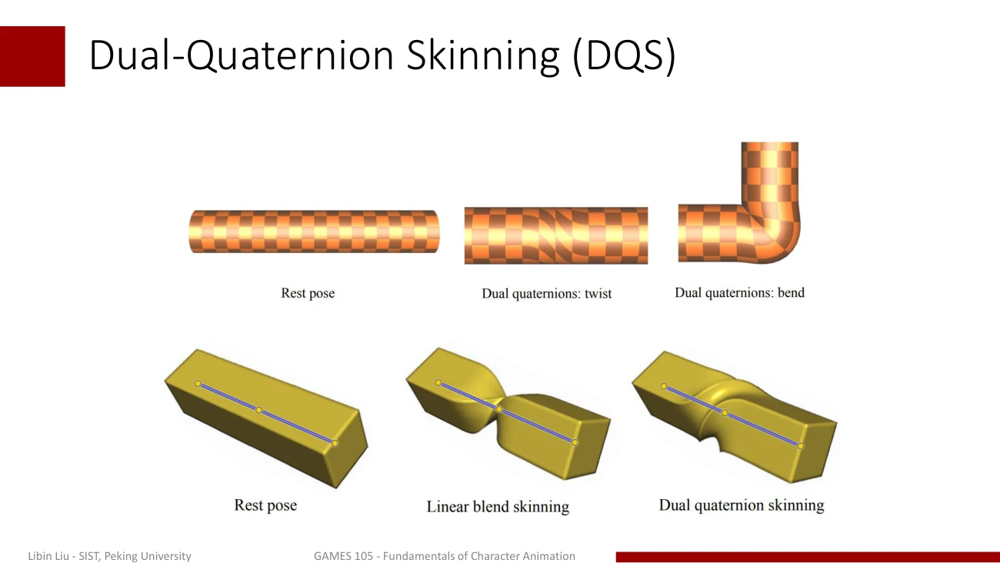
补充说明
课件 P51 引用 Kavan 2008 的论文，DQS 是对 SE(3) 上 intrinsic average 的近似。
常见坑
对偶四元数未归一化 → 变换不再是刚体变换，出现缩放/剪切 → 混合后务必归一化。
对偶四元数的双覆盖（double cover）问题：\(\hat{\boldsymbol{q}}\) 与 \(-\hat{\boldsymbol{q}}\) 表示同一变换 → 混合前要统一符号（选与参考四元数点积为正的那个），否则插值会走“远路”。
把 DQS 当成万能药 → 膨胀伪影在粗壮肢体上仍会出现 → 需要配合校正形状或调整权重。
UE / Unity 落地
UE：默认 LBS；DQS 不是内置选项，但可通过自定义材质或插件实现。
Unity：有社区 DQS 实现；URP/HDRP 自定义 Shader 里可替换蒙皮矩阵为对偶四元数混合。
对偶四元数混合伪代码（cpp）
DualQuat Blend(const DualQuat* dqs, const float* w, int n)
{
DualQuat sum = {0,0};
for (int i = 0; i < n; ++i)
sum += w[i] * dqs[i];
// 归一化：实部单位化，对偶部正交化
float len = length(sum.real);
sum.real /= len;
sum.dual /= len;
return sum;
}055. Blendshapes 与 Pose Space Deformation：叠加修正层
LBS/DQS 解决的是“骨骼驱动的大范围变形”，但肌肉鼓起、血管凸起、表情细节这类姿态相关的形状变化很难用骨骼权重表达。这就是 Blendshapes（形变目标 / Morph Targets） 的用武之地。
基本 Blendshapes：给定一组示例形状 \(B_i\)（相对于基础形状的偏移），新形状是它们的线性组合： \[ X = B_0 + \sum_i w_i B_i \] 其中 \(B_0\) 是基础形状，\(w_i\) 是混合权重。
Pose Space Deformation（PSD） 进一步把权重看成姿态 \(\theta\) 的函数： \[ \boldsymbol{x}' = \sum_j \omega_j T_j \boldsymbol{x} + \delta(\boldsymbol{x}, \theta) \] 其中 \(\delta(\boldsymbol{x}, \theta)\) 是从示例姿态中插值出来的修正量。PSD 通常用径向基函数（RBF）插值实现： \[ y = \sum_i w_i \varphi(\|\boldsymbol{x} - \boldsymbol{x}_i\|) \] 权重 \(w_i\) 通过解线性方程组 \(R \boldsymbol{w} = \boldsymbol{y}\) 得到，其中 \(R_{ij} = \varphi(\|\boldsymbol{x}_i - \boldsymbol{x}_j\|)\)。常用核函数有高斯核、逆多二次核、薄板样条等。
课件对比了 Example-based Skinning (EBS, 如 PSD) 与 Skeleton Subspace Deformation (SSD, 如 LBS/DQS)：
- EBS 优点：质量好、能表现姿态相关细节；缺点：示例难创建、插值算法复杂。
- SSD 优点：易实现、快、GPU 友好；缺点：有伪影、权重需仔细调。
实际系统（如 SMPL）往往两者结合：LBS 做主体变形，Blendshapes 做修正。
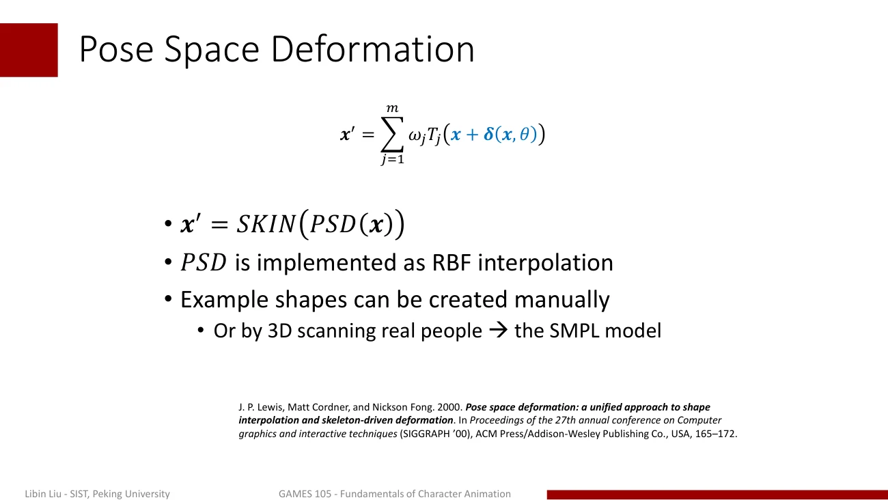
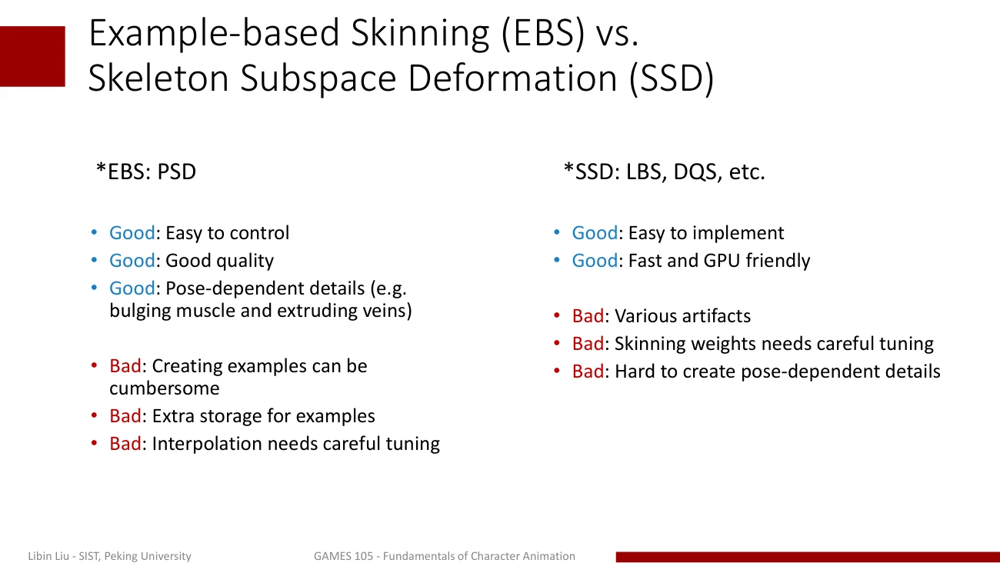
补充说明
课件 P86 提出几个开放问题：整体形状插值还是逐顶点？局部还是全局？RBF 是否唯一选择？——说明这是设计空间很大的领域。
常见坑
Blendshapes 权重和超过 1 或为负 → 形状爆炸或反向变形 → 限制权重范围并归一化。
RBF 核宽度 \(c\) 选得过大/过小 → 插值过平滑或过拟合 → 根据示例点间距调整，必要时做交叉验证。
示例姿态覆盖不足 → 某些姿态下修正量为零或外推异常 → 确保示例姿态覆盖实际运动范围。
UE / Unity 落地
UE：Morph Target 就是 Blendshapes，可在动画蓝图里用 Set Morph Target 节点驱动；面部常用 ARKit 风格 Morph Target。
Unity：BlendShape 在 Skinned Mesh Renderer 上，通过 SkinnedMeshRenderer.SetBlendShapeWeight 控制。
066. 实例：SMPL 人体模型与面部动画
SMPL 模型（Skinned Multi-Person Linear Model）是 ML/CV 里广泛采用的人体参数化模型，它把前面所有技术组合起来：
-
形状主成分：从大量人体扫描中用 PCA（主成分分析） 提取形状基 \(S_m\)，用参数 \(\beta\) 控制体型： \[ T(\beta) = \bar{T} + \sum_m \beta_m S_m \]
-
姿态 Blendshapes：用姿态参数 \(\theta\) 驱动姿态相关的形状修正 \(P_n\)： \[ T(\beta, \theta) = \bar{T} + \sum_m \beta_m S_m + \sum_n \theta_n P_n \]
-
蒙皮：最后用 LBS（或 DQS）把网格绑定到骨骼上： \[ \boldsymbol{x} = \text{SKIN}(T(\beta, \theta), \theta, \mathcal{W}) \]
PCA 的作用：给定数据集 \(\boldsymbol{x}_i \in \mathbb{R}^N\)，PCA 给出 \[ \boldsymbol{x}_i = \bar{\boldsymbol{x}} + \sum_k w_{i,k} \boldsymbol{u}_k \] 其中 \(\boldsymbol{u}_k\) 是主成分方向，\(w_{i,k}\) 是得分。这样用几十个参数就能表示成千上万种体型，解决了“海量示例怎么处理”的问题。
面部动画：课件给出公式 \[ X = X_{\text{ID}} + \sum_i \beta_i B_i + \sum_j \theta_j B_j \] 即 身份（Identity）+ 表情（Expression）。身份 Blendshapes 做面部定制，表情 Blendshapes 做动画。ARKit 定义了一套标准面部 Blendshapes（如 eyeBlinkLeft、jawOpen、mouthSmileLeft 等），UE 的 MetaHuman 和 Live Link Face 就基于这套标准。
面部动画的驱动方式包括：面部追踪（Face Tracking）——用摄像头捕捉人脸关键点，反解 \(\beta_i, \theta_j\) 参数；以及语音驱动（Speech-driven）——从音频预测口型。
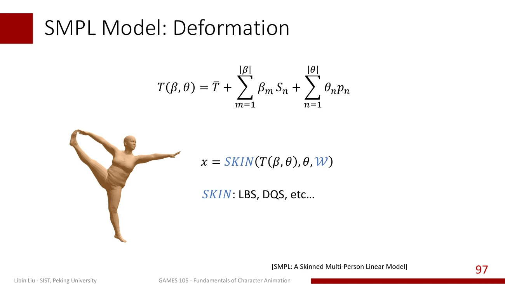
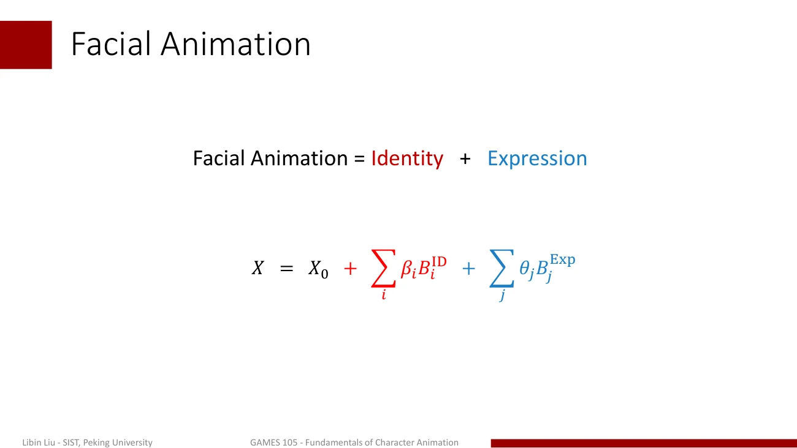
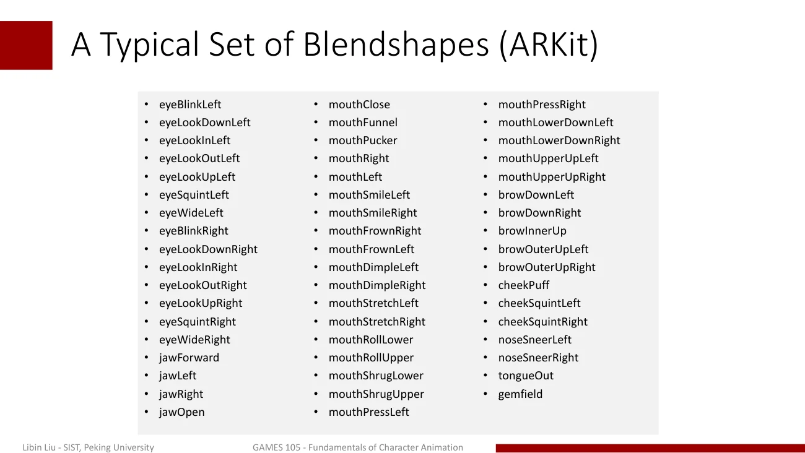
补充说明
SMPL 论文：Loper et al., SIGGRAPH Asia 2015。课件 P88 说明它“learned on real scan data”。
常见坑
PCA 主成分数量选太少 → 体型表达不足，重建误差大 → 根据解释方差曲线选保留 95% 以上方差的主成分数。
面部 Blendshapes 命名不统一 → 导入引擎后映射错乱 → 遵循 ARKit 标准命名，或在导入时做映射表。
把 SMPL 的 \(\beta\) 和 \(\theta\) 搞混 → 体型和姿态互相干扰 → 记住 \(\beta\) 控制形状（体型），\(\theta\) 控制姿态（关节旋转）。
UE / Unity 落地
UE：MetaHuman 使用类似的 Blendshapes + 骨骼驱动面部；Live Link Face 可实时驱动。
Unity：ARKit Face Tracking 插件提供标准 52 个 Blendshapes；SMPL 可通过插件导入。
引擎对照表
| 概念 / 效果 | Unreal Engine | Unity |
|---|---|---|
蒙皮权重 | Skeletal Mesh 导入时随 FBX 带入，可在 Persona 里查看/编辑 | Skinned Mesh Renderer 的 Bones 数组与权重，在建模软件刷好 |
绑定姿势 | Skeleton 的 Reference Pose，导入时确定 | Skinned Mesh Renderer 的 Bind Pose 矩阵 |
Blendshapes / Morph Targets | Morph Target，动画蓝图 Set Morph Target 节点 | BlendShape，SkinnedMeshRenderer.SetBlendShapeWeight |
LBS 顶点蒙皮 | GPU Skinning，默认最多 4 根骨骼影响 | Quality Settings 里 Blend Weights 1/2/4 |
DQS | 非内置，需自定义材质/插件 | 社区插件或自定义 Shader |
面部动画标准 | MetaHuman + Live Link Face，ARKit 风格命名 | ARKit Face Tracking 插件，52 个 Blendshapes |
术语双语表
| English | 中文 | 说明 |
|---|---|---|
| Skinning | 蒙皮 | 把网格顶点按权重绑定到骨骼上，骨骼运动时顶点跟着变形的技术。 |
| Bind Pose / Rest Pose | 绑定姿势 / 静止姿势 | 建模时网格与骨骼对齐的默认姿势，蒙皮变换的参考基准。 |
| Linear Blend Skinning (LBS) | 线性混合蒙皮 | 对每根骨骼的刚体变换按权重做线性加权平均的蒙皮方法。 |
| Candy-Wrapper Artifact | 糖果纸伪影 | LBS 在大角度弯曲时关节体积塌陷、像糖果纸被拧紧的现象。 |
| Dual Quaternion Skinning (DQS) | 对偶四元数蒙皮 | 用单位对偶四元数表示刚体变换并做归一化线性混合，保持刚体性。 |
| Blendshapes / Morph Targets | 形变目标 | 一组示例形状的线性组合，用于表达表情或姿态相关细节。 |
| Pose Space Deformation (PSD) | 姿态空间变形 | 把 Blendshapes 权重看成姿态的函数，用 RBF 等插值从示例姿态学习修正量。 |
| Radial Basis Function (RBF) | 径向基函数 | 一种散点插值方法，用核函数 \(\varphi(\|\boldsymbol{x}-\boldsymbol{x}_i\|)\) 的加权和拟合数据。 |
| Principal Component Analysis (PCA) | 主成分分析 | 降维技术，用少数主成分方向表示高维数据的主要变化。 |
| SMPL | SMPL 人体模型 | 用形状 PCA + 姿态 Blendshapes + LBS 表示人体的参数化模型。 |
课后练习
01 写出 LBS 的完整公式，并解释每一项的几何含义。
查看答案
提示：
从单根骨骼的刚体变换出发，再推广到多骨骼加权。
\[ \boldsymbol{x}_i' = \sum_j w_{ij} \left( Q_j' Q_j^T (\boldsymbol{x}_i - \boldsymbol{o}_j) + \boldsymbol{o}_j' \right) \] 其中 \(\boldsymbol{x}_i\) 是顶点 \(i\) 在绑定姿势下的位置，\(Q_j\)、\(\boldsymbol{o}_j\) 是骨骼 \(j\) 在绑定姿势下的旋转和原点，\(Q_j'\)、\(\boldsymbol{o}_j'\) 是当前姿势下的旋转和原点，\(w_{ij}\) 是顶点 \(i\) 对骨骼 \(j\) 的权重（满足 \(\sum_j w_{ij}=1\)）。几何上：\(Q_j^T(\boldsymbol{x}_i-\boldsymbol{o}_j)\) 把顶点变换到骨骼局部空间，\(Q_j'\) 再把它按当前骨骼旋转带回世界空间，最后加权平均。
02 为什么 LBS 会产生糖果纸伪影？DQS 如何缓解它？
查看答案
提示：
从旋转矩阵的线性插值是否仍是旋转矩阵入手。
LBS 对旋转矩阵做线性加权平均 \(\sum_j w_j R_j\)，两个旋转矩阵的加权平均一般不再是旋转矩阵（不再正交），导致顶点被压到两个旋转之间的弦上，关节体积塌陷。DQS 把刚体变换表示为单位对偶四元数，在对偶四元数空间做线性混合后归一化，相当于在 \(SE(3)\) 上做近似球面插值，混合结果仍是刚体变换，因此不会产生糖果纸伪影；但 DQS 可能产生膨胀伪影。
03 给定两个旋转矩阵 \(R_1 = I\) 和 \(R_2 = \text{Rot}(\pi, \boldsymbol{z})\)，权重各 0.5，计算 LBS 混合后的矩阵，并说明它为什么不是旋转矩阵。
查看答案
提示：
把 \(R_2\) 写成 \(\begin{pmatrix}-1&0\\0&-1\end{pmatrix}\)。
\(0.5 R_1 + 0.5 R_2 = 0.5 \begin{pmatrix}1&0\\0&1\end{pmatrix} + 0.5 \begin{pmatrix}-1&0\\0&-1\end{pmatrix} = \begin{pmatrix}0&0\\0&0\end{pmatrix}\)。零矩阵不是旋转矩阵（行列式为 0，不正交），它把所有顶点压到原点——这正是糖果纸伪影的极端情况。
04 在 UE 里如何用 Morph Target 实现一个“手臂弯曲时肱二头肌鼓起”的效果？
查看答案
提示：
结合 Blendshapes 和姿态驱动的思路。
在建模软件里制作一个“肱二头肌鼓起”的 Morph Target（相对于基础形状的偏移），导入 UE 后在动画蓝图里根据肘部弯曲角度（可从骨骼 Transform 获取）用 Set Morph Target 节点驱动该 Morph Target 的权重，角度越大权重越大。这就是 PSD 思想的简化版：用姿态驱动 Blendshapes 叠加在 LBS 之上。
05 SMPL 模型里 \(\beta\) 和 \(\theta\) 分别控制什么？PCA 在其中起什么作用？
查看答案
提示：
回顾 SMPL 公式的三部分。
\(\beta\) 是形状参数，控制体型（高矮胖瘦），通过 PCA 从大量人体扫描中提取的形状主成分 \(S_m\) 线性组合得到；\(\theta\) 是姿态参数，控制关节旋转，同时驱动姿态 Blendshapes \(P_n\) 做姿态相关修正。PCA 的作用是把高维的人体形状数据降维到几十个主成分，用少量参数表示丰富体型，同时去除噪声。